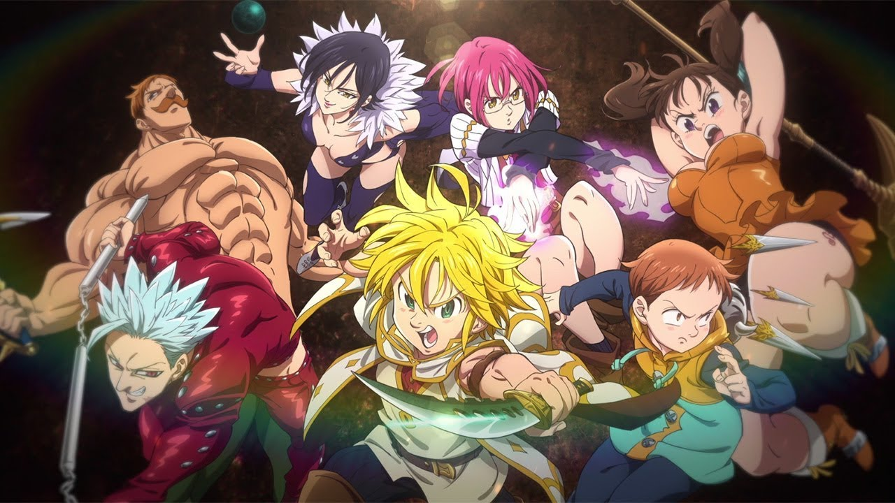

七つの大罪
あらすじ
人間と人間ならざる種族の世界が分かたれていなかった古の時代、ブリタニアの大地を舞台に、
七人の大罪人から組織された伝説の騎士団〈七つの大罪〉の戦いを描く。ブリタニア随一の大国・
リオネス王国は、聖騎士達による『聖戦』のための軍備強化、更に増長した彼らの横暴によって
荒れに荒れていた。十年前に聖騎士長殺しの濡れ衣を着せられた伝説の騎士〈憤怒の罪〉の
メリオダスは、身分を隠して移動酒場を営んでいた折、自らに救国の助命を乞う第三王女エリザベス
と出会う。片や冤罪の真実を知るため、片や母国を救うため、喋る豚ホークをともない、散り散りに
なったメリオダスの同朋である伝説の騎士団〈七つの大罪〉の行方を探し求める。
